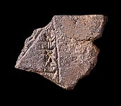

The Babylonian Map of the WorldThe Babylonian Map of the World shows the heartland of Mesopotamia surrounded by a ring of water called the ‘Salt Sea'. Beyond this boundary are mysterious islands where mythical creatures and heroes were thought to live. The scribe who wrote and illustrated the tablet lived in about 600 B.C.
The Babylonian Map of the World was brought to The British Museum in the 1880s with other Mesopotamian objects. The tablet was almost complete. For many years, it was studied by scholars from around the world. In August 1995, a volunteer at The British Museum was busy sorting through pieces of broken tablets. Whenever she found unusual pieces, she put them to one side to show the curators. One day she came across a piece which showed a large triangle and some writing. When one of the curators saw it, he recognised the shape of the piece and the triangle. He realised that it was a missing piece of the Babylonian Map of the World. The tablet was sent to the conservation department where it had to be taken apart so that the fragment could be put back where it belonged.
The tablet is still not quite complete. However, thanks to the piece with the triangle on it, we now know a little bit more about how the Babylonians understood their world. In museums today, there are still thousands of broken tablets and joins like this to be made.
|